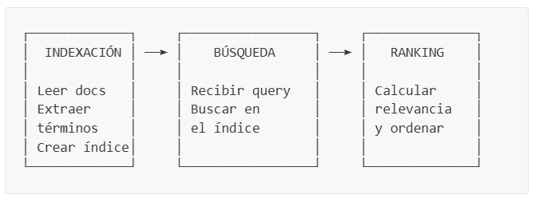
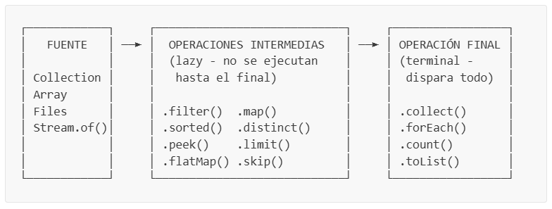

Al completar esta práctica, el estudiante será capaz de:
Comprender y aplicar los conceptos fundamentales de la programación funcional en Java.
Utilizar la API de Streams para procesar colecciones de datos sin bucles explícitos.
Emplear Optional para manejar valores nulos de forma segura.
Diseñar sistemas modulares usando interfaces como contratos entre componentes.
Implementar un índice invertido y comprender su rol en la búsqueda de información.
Aplicar los algoritmos de ranking TF y TF-IDF para ordenar resultados por relevancia.
Utilizar records de Java para crear objetos de datos inmutables.
Introducción
En esta práctica construiremos un motor de búsqueda de documentos de texto desde cero. La aplicación permitirá al usuario indexar archivos .txt desde su sistema de archivos, buscar por palabras clave y obtener resultados ordenados por relevancia.
Lo que hace especial a este proyecto es que toda la lógica se implementará usando programación funcional: Streams, lambdas, method references, Optional y composición de funciones. No usaremos bucles for ni while para procesar datos; en su lugar, usaremos pipelines funcionales.
¿Por qué es importante?
La programación funcional es un paradigma ampliamente utilizado en la industria moderna. Frameworks como Spring WebFlux, Apache Spark y las propias colecciones de Java la incorporan de forma nativa. Aprender a pensar de forma funcional te preparará para escribir código más conciso, legible y menos propenso a errores.
Conceptos Previos
Antes de comenzar a programar, es importante comprender algunos conceptos clave que usaremos a lo largo de toda la práctica.
¿Qué es un Motor de Búsqueda?
Un motor de búsqueda es un sistema que permite encontrar información relevante dentro de un conjunto de documentos. El proceso general consta de tres etapas:

Indexación: se leen los documentos, se extraen las palabras clave y se construye una estructura de datos que permite búsquedas rápidas.
Búsqueda: el usuario escribe una consulta (query) y el sistema encuentra todos los documentos que contienen esas palabras.
Ranking: los documentos encontrados se ordenan por relevancia según un algoritmo de puntuación.
¿Qué es un Índice Invertido?
Un índice invertido es una estructura de datos que mapea cada palabra (término) a la lista de documentos que la contienen. Es la estructura fundamental detrás de motores de búsqueda como Google.
¿Por qué es eficiente?
Sin un índice invertido, para buscar “java” tendríamos que recorrer todos los documentos palabra por palabra. Con el índice, simplemente buscamos la clave “java” en el mapa y obtenemos instantáneamente {doc1, doc3}. Esto convierte una operación O(n × m) en O(1).
En Java, representamos esta estructura con un Map<String, Set<String>>:
La clave (String) es el término/palabra.
El valor (Set<String>) es el conjunto de IDs de documentos que contienen ese término.
Programación Funcional en Java
La programación funcional es un paradigma donde el código se organiza alrededor de funciones puras y datos inmutables, en lugar de objetos con estado mutable.
Principios clave que usaremos:
Principio
Descripción
Ejemplo en Java
Funciones como valores
Las funciones se pueden pasar como argumentos
list.forEach(System.out::println)
Inmutabilidad
Los datos no se modifican después de crearse
record Document(...)
Composición
Encadenar funciones pequeñas para crear operaciones complejas
stream.filter(...).map(...).collect(...)
Sin efectos secundarios
Las funciones no modifican estado externo
stream.map(x -> x * 2)
Lambdas — Son funciones anónimas (sin nombre) que se pueden escribir de forma compacta:
// Forma tradicional (clase anónima):Comparator<String> comp = new Comparator<String>() { @Override public int compare(String a, String b) { return a.length() - b.length(); }};// Forma funcional (lambda):Comparator<String> comp = (a, b) -> a.length() - b.length();
Method references — Son una forma aún más compacta cuando la lambda simplemente llama a un método existente:
Un Stream es una secuencia de elementos que soporta operaciones funcionales para procesar datos de forma declarativa. No es una estructura de datos, sino un pipeline de operaciones sobre datos.
Anatomía de un Stream pipeline:

Ejemplo comparativo — Filtrar nombres que empiezan con “A” y convertir a mayúsculas:
// Forma imperativa (con bucle for):List<String> nombres = List.of("Ana", "Bob", "Alberto", "Carlos");List<String> resultado = new ArrayList<>();for (String nombre : nombres) { if (nombre.startsWith("A")) { resultado.add(nombre.toUpperCase()); }}// Forma funcional (con Stream):List<String> resultado = nombres.stream() .filter(nombre -> nombre.startsWith("A")) .map(String::toUpperCase) .toList();// resultado = ["ANA", "ALBERTO"]
Operaciones intermedias más usadas:
Operación
¿Qué hace?
Ejemplo
filter(predicate)
Conserva solo los elementos que cumplen la condición
.filter(x -> x > 5)
map(function)
Transforma cada elemento
.map(String::toUpperCase)
flatMap(function)
Transforma cada elemento en un stream y los combina en uno solo
.flatMap(list -> list.stream())
distinct()
Elimina duplicados
.distinct()
sorted()
Ordena los elementos
.sorted(Comparator.reverseOrder())
peek(consumer)
Ejecuta una acción sin modificar el stream (útil para debugging)
.peek(System.out::println)
limit(n)
Toma solo los primeros n elementos
.limit(10)
Operaciones terminales más usadas:
Operación
¿Qué hace?
Ejemplo
toList()
Recopila todos los elementos en una lista
.toList()
forEach(consumer)
Ejecuta una acción por cada elemento
.forEach(System.out::println)
count()
Cuenta los elementos
.count()
sum()
Suma los elementos (solo en IntStream, LongStream, DoubleStream)
.mapToInt(...).sum()
anyMatch(predicate)
¿Algún elemento cumple la condición?
.anyMatch(x -> x > 10)
collect(collector)
Recolecta elementos en una estructura específica
.collect(Collectors.toSet())
Concepto clave: Evaluación perezosa (lazy)
Las operaciones intermedias como filter() y map()no se ejecutan inmediatamente. Solo se ejecutan cuando se invoca una operación terminal como toList() o forEach(). Esto permite optimizaciones internas y evita procesamiento innecesario.
Optional en Java
Optional<T> es un contenedor que puede o no contener un valor. Fue diseñado para eliminar los errores de NullPointerException y hacer explícito cuándo un valor podría estar ausente.
// ❌ Forma tradicional (propenso a NullPointerException):String valor = mapa.get("clave");if (valor != null) { System.out.println(valor.toUpperCase());} else { System.out.println("No encontrado");}// ✅ Forma funcional con Optional:Optional.ofNullable(mapa.get("clave")) .map(String::toUpperCase) .ifPresentOrElse( System.out::println, () -> System.out.println("No encontrado"));
Métodos más usados de Optional:
Método
¿Qué hace?
Optional.of(valor)
Crea un Optional con un valor (no puede ser null)
Optional.ofNullable(valor)
Crea un Optional que podría contener null
Optional.empty()
Crea un Optional vacío
.isPresent()
¿Contiene un valor?
.ifPresent(consumer)
Ejecuta una acción si hay valor
.ifPresentOrElse(consumer, runnable)
Ejecuta una acción si hay valor, u otra si está vacío
.map(function)
Transforma el valor si existe
.filter(predicate)
Conserva el valor solo si cumple la condición
.orElse(default)
Devuelve el valor o un valor por defecto
Records en Java
Un record es un tipo especial de clase introducido en Java 16 que sirve para representar datos inmutables. Java genera automáticamente:
El constructor
Los métodos de acceso (getters sin el prefijo get)
equals(), hashCode() y toString()
// Clase tradicional (mucho código repetitivo):public class Persona { private final String nombre; private final int edad; public Persona(String nombre, int edad) { this.nombre = nombre; this.edad = edad; } public String getNombre() { return nombre; } public int getEdad() { return edad; } // + equals(), hashCode(), toString()...}// Record (equivalente en una sola línea):public record Persona(String nombre, int edad) {}
¿Por qué usar records?
Son ideales para representar “portadores de datos” (data carriers) como resultados de búsqueda, documentos o configuraciones. Al ser inmutables, son seguros para usar en entornos multi-hilo y más fáciles de razonar.
Interfaces Funcionales
Una interfaz funcional es una interfaz que tiene exactamente un método abstracto. Esto permite que se pueda representar con una lambda o method reference.
La anotación @FunctionalInterface es opcional pero recomendada: le indica al compilador que verifique que la interfaz tiene exactamente un método abstracto.
Nota: Una interfaz funcional puede tener métodos default y static adicionales. Solo se requiere un único método abstracto.
Estructura del Proyecto
Antes de comenzar a programar, crea la siguiente estructura de carpetas en tu proyecto Java. Si estás usando VS Code con la extensión de Java, la estructura base ya estará creada; solo necesitas agregar los subpaquetes.
Convención de paquetes:
Cada subcarpeta dentro de src/ representa un paquete Java. Los archivos dentro de core/interfaces/ pertenecen al paquete core.interfaces, los de core/models/ al paquete core.models, y así sucesivamente.
Parte 1 — Definición de Contratos (Interfaces)
¿Por qué empezamos con interfaces?
En ingeniería de software, un buen diseño comienza definiendo los contratos (qué hace cada componente) antes de escribir la implementación (cómo lo hace). Las interfaces nos permiten:
Definir qué métodos debe tener cada componente
Permitir múltiples implementaciones (por ejemplo, dos algoritmos de ranking diferentes)
Facilitar las pruebas y el mantenimiento del código
Paso 1.1: Crear la interfaz IDocument
📄 Archivo:src/core/interfaces/IDocument.java
Esta interfaz define el contrato que debe cumplir cualquier documento en nuestro sistema. Un documento tiene un identificador único, un título, contenido, la ruta del archivo de donde proviene y la fecha/hora en que fue indexado.
Nota sobre LocalDateTime:
Java tiene dos APIs para manejar fechas: la antigua (java.util.Date) y la moderna (java.time.*). En este proyecto usamos LocalDateTime de la API moderna porque es inmutable, más legible y tiene mejor soporte para operaciones de fecha/hora.
Paso 1.2: Crear la interfaz ITextProcessor
📄 Archivo:src/core/interfaces/ITextProcessor.java
El procesador de texto es responsable de transformar texto crudo en una lista de términos normalizados, listos para ser indexados o buscados. El procesamiento consta de 3 pasos:
Tokenizar — Separar el texto en palabras individuales
Normalizar — Convertir a minúsculas y eliminar espacios
Eliminar stop words — Remover palabras muy comunes que no aportan significado (como “el”, “de”, “the”, “is”)
Concepto clave: Método default
Un método default en una interfaz proporciona una implementación predeterminada. Las clases que implementen ITextProcessor heredan este método automáticamente sin necesidad de sobreescribirlo. Observa cómo process()compone dos operaciones (tokenize y removeStopWords) en un solo pipeline. Esto es composición funcional.
¿Qué son las stop words?
Las stop words son palabras extremadamente comunes en un idioma que no aportan significado útil para la búsqueda. Por ejemplo, en español: “el”, “la”, “de”, “en”, “y”. En inglés: “the”, “a”, “is”, “and”, “of”. Si no las eliminamos, casi todos los documentos coincidirían con cualquier consulta.
Este contrato define cómo se leen documentos desde el sistema de archivos. Tiene dos métodos: uno para leer un archivo individual y otro para leer todos los archivos de un directorio.
¿Por qué readDocuments retorna Stream<IDocument> en vez de List<IDocument>?
Retornar un Stream permite evaluación perezosa: los documentos se leen uno a uno conforme se necesitan, en lugar de cargar todos en memoria de una vez. Además, el consumidor puede encadenar operaciones funcionales directamente sobre el resultado, como .filter(), .map() o .peek().
Paso 1.4: Crear la interfaz IIndexer
📄 Archivo:src/core/interfaces/IIndexer.java
El indexador es el corazón del motor de búsqueda. Es responsable de construir y mantener el índice invertido y el registro de documentos.
Observa el uso de Optional<IDocument> en findDocument(). En lugar de retornar null cuando no se encuentra un documento (lo cual podría causar un NullPointerException), retornamos un Optional que hace explícito que el resultado podría estar vacío.
Paso 1.5: Crear la interfaz IRanker
📄 Archivo:src/core/interfaces/IRanker.java
El ranker es el componente que calcula la relevancia de un documento respecto a una consulta. Es una interfaz funcional porque tiene un único método abstracto.
¿Por qué @FunctionalInterface?
La anotación @FunctionalInterface le dice al compilador que esta interfaz debe tener exactamente un método abstracto (calculateScore). Los métodos default (getName, getDescription) no cuentan como abstractos porque ya tienen implementación. Esto nos permitiría, si quisiéramos, crear un ranker usando una lambda directamente:
El searcher coordina todo el proceso de búsqueda: recibe la consulta del usuario, busca documentos candidatos en el índice, calcula la relevancia con el ranker y retorna los resultados ordenados.
Sobrecarga de métodos:
Observa que hay dos versiones de search(): una que recibe solo la consulta y otra que además recibe un límite de resultados. Esto se llama sobrecarga (method overloading) y permite al usuario elegir el nivel de control que necesita.
Parte 2 — Modelos de Datos
Con los contratos definidos, ahora implementaremos las clases que representan los datos de nuestro sistema.
Paso 2.1: Crear el record Document
📄 Archivo:src/core/models/Document.java
El Document es un record que implementa IDocument. Almacena los datos de un documento de forma inmutable.
package core.models;import core.interfaces.IDocument;import java.time.LocalDateTime;import java.util.UUID;/** * Documento inmutable representado como record. * Usa LocalDateTime en vez de Date para API moderna de fechas. */public record Document( String id, String title, String content, String filePath, LocalDateTime indexedAt) implements IDocument { /** * Factory method: crea un Document con ID auto-generado y timestamp actual. */ public static Document of(String title, String content, String filePath) { return new Document( UUID.randomUUID().toString(), title, content, filePath, LocalDateTime.now() ); } @Override public String getId() { return id; } @Override public String getTitle() { return title; } @Override public String getContent() { return content; } @Override public String getFilePath() { return filePath; }}
Concepto: Factory Method
El método estático Document.of(title, content, filePath) es un factory method — un patrón de diseño que encapsula la lógica de creación. En este caso, genera automáticamente un UUID como identificador único y marca la fecha/hora actual. Así, el código cliente no necesita preocuparse por estos detalles:
// En vez de:Document doc = new Document(UUID.randomUUID().toString(), "Título", "Contenido", "ruta", LocalDateTime.now());// Simplemente escribimos:Document doc = Document.of("Título", "Contenido", "ruta");
Concepto: UUID UUID (Universally Unique Identifier) genera un identificador único de 128 bits como "550e8400-e29b-41d4-a716-446655440000". Es prácticamente imposible que se generen dos UUIDs iguales, lo que lo hace ideal para identificar documentos sin necesidad de un contador global.
Paso 2.2: Crear el record SearchResult
📄 Archivo:src/core/models/SearchResult.java
Cada resultado de búsqueda contiene el documento encontrado, su puntaje de relevancia y la lista de términos que coincidieron.
package core.models;import core.interfaces.IDocument;import java.util.Comparator;import java.util.List;/** * Resultado de búsqueda inmutable. * Implementa Comparable para ordenamiento natural por score descendente. */public record SearchResult( IDocument document, double score, List<String> matchedTerms) implements Comparable<SearchResult> { /** Comparador por score descendente (mayor relevancia primero). */ public static final Comparator<SearchResult> BY_SCORE_DESC = Comparator.comparingDouble(SearchResult::score).reversed(); @Override public int compareTo(SearchResult other) { return BY_SCORE_DESC.compare(this, other); }}
Desglosemos esta clase:
record SearchResult(IDocument document, double score, List<String> matchedTerms) — Almacena tres datos: el documento, su puntaje y los términos que coincidieron.
implements Comparable<SearchResult> — Permite comparar resultados entre sí para ordenarlos.
BY_SCORE_DESC — Un Comparator estático que ordena por puntaje de mayor a menor. Lo usamos como constante para no recrearlo cada vez.
Comparator.comparingDouble(SearchResult::score).reversed() — Crea un comparador funcional que:
Extrae el score de cada SearchResult usando un method reference
Lo invierte con .reversed() para que el mayor puntaje aparezca primero
Paso 2.3: Crear la clase TextProcessor
📄 Archivo:src/core/models/TextProcessor.java
Esta es la implementación concreta de ITextProcessor. Procesa texto crudo convirtiéndolo en una lista de términos normalizados y filtrados.
Pattern.compile("\\b[\\w]+\\b") — Esta expresión regular captura todas las “palabras” de un texto. \\b indica un límite de palabra y [\\w]+ captura uno o más caracteres alfanuméricos.
WORD_PATTERN.matcher(text).results() — El método .results() (Java 9+) retorna un Stream<MatchResult> con todas las coincidencias. Esto es funcional: en vez de iterar manualmente con un while(matcher.find()), obtenemos un stream.
.map(match -> normalize(match.group())) — Transforma cada coincidencia extrayendo el texto (match.group()) y normalizándolo a minúsculas.
.filter(token -> token.length() > 1) — Descarta tokens de un solo carácter (como “a”, “y”) que no son útiles para la búsqueda.
Set.of(...) — Crea un Set inmutable. Usamos Set en vez de List porque la operación .contains() en un Set es O(1), mientras que en un List es O(n).
¿Por qué compilar el Pattern como static final?
Compilar una expresión regular es una operación costosa. Al declararla como static final, se compila una sola vez cuando se carga la clase y se reutiliza en todas las llamadas. Esto es un patrón de optimización muy común en Java.
Parte 3 — Lectura de Archivos
Paso 3.1: Crear la clase FileDocumentReader
📄 Archivo:src/io/FileDocumentReader.java
Esta clase se encarga de leer archivos del sistema de archivos y convertirlos en objetos Document. Usa la API NIO.2 de Java, que es la API moderna para operaciones de archivo.
package io;import core.interfaces.IDocument;import core.interfaces.IDocumentReader;import core.models.Document;import java.io.IOException;import java.io.UncheckedIOException;import java.nio.file.Files;import java.nio.file.Path;import java.util.Set;import java.util.stream.Stream;/** * Lector de documentos basado en NIO.2. * Usa streams de archivos y manejo funcional de errores. */public class FileDocumentReader implements IDocumentReader { private static final Set<String> SUPPORTED_EXTENSIONS = Set.of(".txt", ".pdf", ".docx", ".html", ".md", ".csv"); @Override public IDocument readDocument(String filePath) { Path path = Path.of(filePath); if (!Files.exists(path) || !Files.isRegularFile(path)) { throw new IllegalArgumentException("Archivo no encontrado: " + filePath); } try { String title = path.getFileName().toString(); String content = Files.readString(path); return Document.of(title, content, filePath); } catch (IOException e) { throw new UncheckedIOException("Error al leer archivo: " + filePath, e); } } @Override public Stream<IDocument> readDocuments(String directoryPath) { Path dirPath = Path.of(directoryPath); if (!Files.exists(dirPath) || !Files.isDirectory(dirPath)) { throw new IllegalArgumentException("Directorio no encontrado: " + directoryPath); } try { // NIO.2 stream: listar → filtrar por extensión → mapear a Document return Files.list(dirPath) .filter(Files::isRegularFile) .filter(path -> hasSupportedExtension(path.getFileName().toString())) .map(path -> readDocument(path.toString())); } catch (IOException e) { throw new UncheckedIOException("Error al listar directorio: " + directoryPath, e); } } /** * Verifica extensión soportada usando stream funcional. */ private boolean hasSupportedExtension(String fileName) { String lowerName = fileName.toLowerCase(); return SUPPORTED_EXTENSIONS.stream() .anyMatch(lowerName::endsWith); }}
Desglosemos el pipeline de readDocuments():
Files.list(dirPath) // 1. Listar todos los archivos del directorio .filter(Files::isRegularFile) // 2. Solo archivos (no subdirectorios) .filter(path -> hasSupportedExtension(path.getFileName().toString())) // 3. Solo extensiones soportadas .map(path -> readDocument(path.toString())); // 4. Convertir cada archivo en un Document
Este es un pipeline funcional clásico: fuente → filtro → filtro → transformación. No hay bucles, no hay variables intermedias, no hay listas temporales.
Concepto: Files.list() retorna un Stream<Path>
A diferencia de File.listFiles() (API antigua) que retorna un array, Files.list() retorna un Stream que podemos procesar de forma funcional.
Concepto: Method reference Files::isRegularFile Files::isRegularFile es una referencia al método estático Files.isRegularFile(Path). Es equivalente a la lambda path -> Files.isRegularFile(path).
Concepto: Method reference lowerName::endsWith
Esta es una referencia a un método de instancia del objeto lowerName. Es equivalente a ext -> lowerName.endsWith(ext). Esto hace que .anyMatch(lowerName::endsWith) verifique si el nombre del archivo termina con alguna de las extensiones soportadas.
Parte 4 — Índice Invertido
Paso 4.1: Crear la clase HashTableIndexer
📄 Archivo:src/indexing/HashTableIndexer.java
Esta es la implementación del índice invertido. Usa un HashMap para almacenar el mapeo término → conjunto de IDs de documentos.
package indexing;import core.interfaces.IDocument;import core.interfaces.IIndexer;import core.interfaces.ITextProcessor;import java.util.*;/** * Indexador invertido basado en HashMap. * Usa streams para construir el índice y computeIfAbsent para inserción * atómica. */public class HashTableIndexer implements IIndexer { private final Map<String, Set<String>> invertedIndex = new HashMap<>(); private final Map<String, IDocument> documents = new HashMap<>(); private final ITextProcessor textProcessor; public HashTableIndexer(ITextProcessor textProcessor) { this.textProcessor = textProcessor; } @Override public void indexDocument(IDocument document) { // Re-index: si ya existe, limpia las entradas anteriores if (documents.containsKey(document.getId())) { removeDocument(document.getId()); } documents.put(document.getId(), document); // Pipeline funcional: combinar texto → procesar → indexar String combinedText = document.getTitle() + " " + document.getContent(); textProcessor.process(combinedText) .forEach(term -> invertedIndex .computeIfAbsent(term, _k -> new HashSet<>()) .add(document.getId())); } @Override public void removeDocument(String documentId) { if (!documents.containsKey(documentId)) { return; } documents.remove(documentId); // Stream: eliminar el docId de cada posting list y remover términos vacíos List<String> emptyTerms = invertedIndex.entrySet().stream() .peek(entry -> entry.getValue().remove(documentId)) .filter(entry -> entry.getValue().isEmpty()) .map(Map.Entry::getKey) .toList(); emptyTerms.forEach(invertedIndex::remove); } @Override public void clear() { invertedIndex.clear(); documents.clear(); } /** Retorna vista no modificable del índice invertido. */ @Override public Map<String, Set<String>> getIndex() { return Collections.unmodifiableMap(invertedIndex); } /** Retorna vista no modificable del mapa de documentos. */ @Override public Map<String, IDocument> getDocuments() { return Collections.unmodifiableMap(documents); } @Override public Optional<IDocument> findDocument(String documentId) { return Optional.ofNullable(documents.get(documentId)); } @Override public int getDocumentCount() { return documents.size(); } @Override public int getTermCount() { return invertedIndex.size(); }}
Analicemos los patrones funcionales en esta clase:
1. computeIfAbsent — Inserción atómica y funcional:
invertedIndex.computeIfAbsent(term, _k -> new HashSet<>()).add(document.getId());
Este método hace lo siguiente en una sola línea:
Si la clave termno existe en el mapa, crea un nuevo HashSet<>() y lo asocia a esa clave.
Si la clave termya existe, simplemente retorna el Set existente.
En ambos casos, retorna el Set, sobre el cual llamamos .add(document.getId()).
Esto reemplaza el patrón imperativo:
// Equivalente imperativo (más verboso y propenso a errores):if (!invertedIndex.containsKey(term)) { invertedIndex.put(term, new HashSet<>());}invertedIndex.get(term).add(document.getId());
Nota: El parámetro _k con guion bajo es una convención para indicar que no usamos ese parámetro. Es la clave del mapa (el término), pero como ya lo tenemos en la variable term, no lo necesitamos.
2. Pipeline de eliminación en removeDocument():
List<String> emptyTerms = invertedIndex.entrySet().stream() .peek(entry -> entry.getValue().remove(documentId)) // 1. Eliminar el docId de cada posting list .filter(entry -> entry.getValue().isEmpty()) // 2. Quedarse solo con los que quedaron vacíos .map(Map.Entry::getKey) // 3. Extraer la clave (término) .toList(); // 4. Recopilar en listaemptyTerms.forEach(invertedIndex::remove); // 5. Eliminar términos vacíos del índice
¿Por qué no eliminamos directamente dentro del stream?
No podemos modificar un Map mientras lo estamos recorriendo con un stream (lanzaría ConcurrentModificationException). Por eso primero recopilamos los términos vacíos en una lista y luego los eliminamos en un paso separado.
Retorna una vista de solo lectura del mapa. Si alguien intenta modificarlo externamente, recibirá una UnsupportedOperationException. Esto protege la integridad del índice.
documents.get(documentId) podría retornar null si el documento no existe. Optional.ofNullable() envuelve ese posible null en un Optional, obligando al código cliente a manejar explícitamente la ausencia del valor.
Parte 5 — Algoritmos de Ranking
¿Qué es el ranking?
Cuando buscamos “java programming” y obtenemos 50 documentos que contienen esas palabras, necesitamos decidir cuáles son más relevantes. El algoritmo de ranking asigna un puntaje numérico a cada documento y los ordena de mayor a menor relevancia.
Paso 5.1: Crear TermFrequencyRanker
📄 Archivo:src/ranking/TermFrequencyRanker.java
El algoritmo más simple: cuenta cuántas veces aparecen los términos de la consulta dentro del documento. A mayor frecuencia, mayor relevancia.
Fórmula:
Score = Σ count(queryTerm_i en documento)
Ejemplo: Si buscamos “java programming” y un documento contiene “java” 5 veces y “programming” 3 veces, su puntaje es 5 + 3 = 8.
package ranking;import core.interfaces.IDocument;import core.interfaces.IRanker;import core.interfaces.ITextProcessor;import java.util.List;import java.util.Map;import java.util.Set;/** * Calcula relevancia por frecuencia de términos del query en el documento. * Implementación puramente funcional con streams. */public class TermFrequencyRanker implements IRanker { private final ITextProcessor textProcessor; public TermFrequencyRanker(ITextProcessor textProcessor) { this.textProcessor = textProcessor; } @Override public double calculateScore(IDocument document, List<String> queryTerms, Map<String, Set<String>> index) { String combinedText = document.getTitle() + " " + document.getContent(); List<String> docTerms = textProcessor.process(combinedText); // Stream: por cada queryTerm, contar ocurrencias en docTerms return queryTerms.stream() .mapToLong(queryTerm -> docTerms.stream() .filter(queryTerm::equalsIgnoreCase) .count()) .sum(); } @Override public String getName() { return "Term Frequency Ranker"; } @Override public String getDescription() { return "Ranks documents based on the frequency of query terms within the document."; }}
Desglose del pipeline funcional:
queryTerms.stream() // 1. Stream de términos de la consulta .mapToLong(queryTerm -> docTerms.stream() // 2. Para cada término de la consulta... .filter(queryTerm::equalsIgnoreCase) // ...filtrar los términos del doc que coinciden .count()) // ...contar las coincidencias .sum(); // 3. Sumar todas las frecuencias
Nota sobre mapToLong: mapToLong convierte el stream a un LongStream, que tiene operaciones numéricas como .sum(), .average(), .max(). Usamos Long porque .count() retorna un long.
Nota sobre queryTerm::equalsIgnoreCase:
Es un method reference a un método de instancia. Es equivalente a docTerm -> queryTerm.equalsIgnoreCase(docTerm).
Paso 5.2: Crear TfIdfRanker
📄 Archivo:src/ranking/TfIdfRanker.java
TF-IDF (Term Frequency — Inverse Document Frequency) es un algoritmo más sofisticado que no solo cuenta las ocurrencias, sino que también pondera la rareza de cada término en el corpus completo.
Intuición: Si la palabra “java” aparece en solo 2 de 100 documentos, es muy específica y debería tener más peso. Pero si la palabra “software” aparece en 80 de 100 documentos, es muy común y debería tener menos peso.
Fórmulas:
TF(term, doc) = número de veces que 'term' aparece en 'doc'
IDF(term) = log(N / (1 + DF(term)))
TF-IDF(term) = TF(term, doc) × IDF(term)
Score del documento = Σ TF-IDF(queryTerm_i)
Donde:
N = número total de documentos en el corpus
DF(term) = número de documentos que contienen el término (Document Frequency)
package ranking;import core.interfaces.IDocument;import core.interfaces.IRanker;import core.interfaces.ITextProcessor;import java.util.List;import java.util.Map;import java.util.Set;/** * Calcula relevancia usando TF-IDF (Term Frequency - Inverse Document Frequency). * Pipeline funcional completo con streams. */public class TfIdfRanker implements IRanker { private final ITextProcessor textProcessor; public TfIdfRanker(ITextProcessor textProcessor) { this.textProcessor = textProcessor; } @Override public double calculateScore(IDocument document, List<String> queryTerms, Map<String, Set<String>> index) { String combinedText = document.getTitle() + " " + document.getContent(); List<String> docTerms = textProcessor.process(combinedText); // Número total de documentos distintos en el corpus long totalDocuments = index.values().stream() .flatMap(Set::stream) .distinct() .count(); // Stream: calcular TF-IDF para cada queryTerm y sumar return queryTerms.stream() .mapToDouble(queryTerm -> { long tf = docTerms.stream() .filter(queryTerm::equalsIgnoreCase) .count(); if (tf == 0) return 0.0; int df = index.getOrDefault(queryTerm, Set.of()).size(); double idf = Math.log((double) totalDocuments / (1 + df)); return tf * idf; }) .sum(); } @Override public String getName() { return "TF-IDF Ranker"; } @Override public String getDescription() { return "Ranks documents based on Term Frequency-Inverse Document Frequency (TF-IDF) scoring."; }}
Desglose paso a paso:
1. Contar documentos totales con flatMap:
long totalDocuments = index.values().stream() // Stream de Set<String> (cada set = IDs de docs para un término) .flatMap(Set::stream) // "Aplanar": convertir Stream<Set<String>> en Stream<String> .distinct() // Eliminar duplicados (un doc puede aparecer en muchos términos) .count(); // Contar documentos únicos
Concepto: flatMap flatMap es una de las operaciones más poderosas de Streams. Cuando tienes un “stream de colecciones” y quieres un “stream de elementos”, flatMap los “aplana”:
queryTerms.stream() .mapToDouble(queryTerm -> { // TF: frecuencia del término en el documento long tf = docTerms.stream() .filter(queryTerm::equalsIgnoreCase) .count(); if (tf == 0) return 0.0; // Optimización: si no aparece, score = 0 // DF: en cuántos documentos aparece este término int df = index.getOrDefault(queryTerm, Set.of()).size(); // IDF: logaritmo del inverso de la frecuencia del documento double idf = Math.log((double) totalDocuments / (1 + df)); return tf * idf; // TF-IDF para este término }) .sum(); // Sumar TF-IDF de todos los query terms
¿Por qué 1 + df en vez de solo df?
Para evitar la división por cero. Si un término del query no aparece en ningún documento del índice (df = 0), la fórmula sin el +1 sería log(N/0) = infinito. El +1 es una técnica de suavizado (smoothing) común en recuperación de información.
¿Por qué Math.log (logaritmo natural)?
El logaritmo comprime la escala: si un término aparece en 1 de 1000 documentos (IDF = log(1000/2) ≈ 6.2) vs. en 500 de 1000 (IDF = log(1000/501) ≈ 0.69), el término raro obtiene un peso ~9 veces mayor que el común, en lugar de 500 veces mayor sin el logaritmo. Esto evita que la rareza domine excesivamente el puntaje.
Parte 6 — Motor de Búsqueda
Paso 6.1: Crear la clase BasicSearcher
📄 Archivo:src/search/BasicSearcher.java
El BasicSearcher orquesta todo el proceso de búsqueda en un único pipeline funcional, sin variables intermedias mutables.
package search;import core.interfaces.IIndexer;import core.interfaces.IRanker;import core.interfaces.ISearcher;import core.interfaces.ITextProcessor;import core.models.SearchResult;import java.util.List;import java.util.Map;import java.util.Set;/** * Motor de búsqueda con pipeline funcional puro. * Toda la operación search() es un único stream pipeline sin variables intermedias mutables. */public class BasicSearcher implements ISearcher { private final IIndexer indexer; private final IRanker ranker; private final ITextProcessor textProcessor; public BasicSearcher(IIndexer indexer, IRanker ranker, ITextProcessor textProcessor) { this.indexer = indexer; this.ranker = ranker; this.textProcessor = textProcessor; } @Override public List<SearchResult> search(String query) { return search(query, 10); } @Override public List<SearchResult> search(String query, int maxResults) { if (query == null || query.isBlank()) { return List.of(); } List<String> queryTerms = textProcessor.process(query); if (queryTerms.isEmpty()) { return List.of(); } Map<String, Set<String>> index = indexer.getIndex(); // Pipeline funcional puro: // 1. Stream de queryTerms → obtener docIds candidatos // 2. Para cada docId → buscar documento (Optional) → calcular score // 3. Construir SearchResult → ordenar por score desc → limitar return queryTerms.stream() .filter(index::containsKey) .flatMap(term -> index.get(term).stream()) .distinct() .flatMap(docId -> indexer.findDocument(docId).stream()) .map(document -> { List<String> matched = queryTerms.stream() .filter(term -> index.containsKey(term) && index.get(term).contains(document.getId())) .toList(); double score = ranker.calculateScore(document, queryTerms, index); return new SearchResult(document, score, matched); }) .sorted(SearchResult.BY_SCORE_DESC) .limit(maxResults) .toList(); }}
Este es el pipeline más importante del proyecto. Analicémoslo paso a paso:
queryTerms.stream() // 1. ["java", "programming"] .filter(index::containsKey) // 2. Solo términos que existen en el índice .flatMap(term -> index.get(term).stream()) // 3. Obtener todos los docIds candidatos .distinct() // 4. Eliminar duplicados (un doc puede contener ambos términos) .flatMap(docId -> indexer.findDocument(docId).stream()) // 5. Buscar cada documento por su ID .map(document -> { // 6. Para cada documento... List<String> matched = queryTerms.stream() // a. Determinar qué términos del query coincidieron .filter(term -> index.containsKey(term) && index.get(term).contains(document.getId())) .toList(); double score = ranker.calculateScore(...); // b. Calcular el puntaje de relevancia return new SearchResult(document, score, matched); // c. Construir el resultado }) .sorted(SearchResult.BY_SCORE_DESC) // 7. Ordenar por puntaje descendente .limit(maxResults) // 8. Tomar solo los top N resultados .toList(); // 9. Recopilar en lista
Concepto clave: Optional.stream()
En el paso 5, indexer.findDocument(docId) retorna un Optional<IDocument>. El método .stream() de Optional convierte:
Optional.of(doc) → Stream.of(doc) (stream con un elemento)
Optional.empty() → Stream.empty() (stream vacío)
Esto permite usar flatMap para “saltar” los documentos no encontrados sin necesidad de un if (doc != null).
Parte 7 — Aplicación de Consola
Paso 7.1: Crear la clase App
📄 Archivo:src/App.java
La clase App es el punto de entrada de la aplicación. Implementa una interfaz de consola interactiva usando un dispatch table — un patrón funcional que reemplaza las cadenas de if-else o switch-case con un Map<String, Runnable>.
Concepto: Dispatch Table
Un dispatch table es un Map que asocia una clave (la opción del menú) con una acción (la función a ejecutar). En vez de escribir:
// ❌ Forma imperativaswitch (choice) { case "1": searchDocuments(); break; case "2": indexDocuments(); break; case "3": viewDocuments(); break; // ...}
Usamos:
// ✅ Forma funcionalMap<String, Runnable> actions = new LinkedHashMap<>();actions.put("1", App::searchDocuments);actions.put("2", App::indexDocuments);actions.put("3", App::viewDocuments);// Ejecutar:Optional.ofNullable(actions.get(choice)) .ifPresentOrElse(Runnable::run, () -> System.out.println("Opción inválida"));
Ventajas:
Agregar una nueva opción es solo agregar una línea al mapa.
La lógica de despacho es genérica y no cambia.
Es más fácil de mantener y extender.
Implementa la clase App completa con las siguientes secciones. Esta clase es extensa, pero cada sección aplica los patrones funcionales que hemos aprendido:
Ejecuta la acción si la opción es válida, o muestra error
Stream.of + forEach
Menús, headers, status
Renderizar listas de información sin bucles
IntStream.range
displaySearchResults()
Iterar con índice de forma funcional
Optional + filter + map
showDocumentPreview()
Truncamiento condicional del contenido
parseIntSafe → Optional
Selección de ranking/preview
Parseo seguro sin try-catch en el flujo principal
peek + count
indexFromFolder()
Pipeline de indexación con logging lateral
Text blocks (""")
Pantallas de bienvenida/salida
Strings multilinea (Java 15+)
Parte 8 — Documentos de Prueba
Crea la carpeta sample_documents/ en la raíz del proyecto y añade los siguientes archivos de texto. Estos servirán como corpus de prueba para el motor de búsqueda.
📄 Archivo:sample_documents/programming.txt
Introduction to ProgrammingProgramming is the process of creating a set of instructions that tell a computer how to perform a task. Programming languages like Java, Python, JavaScript, and C++ allow developers to write software applications.Key concepts in programming include:- Variables and data types- Control structures (if/else, loops)- Functions and methods- Object-oriented programming (OOP)- Data structures and algorithmsModern programming practices emphasize clean code, version control with Git, automated testing, and continuous integration. Developers use integrated development environments (IDEs) like Visual Studio Code, IntelliJ IDEA, and Eclipse to write and debug code efficiently.Programming paradigms include imperative, functional, object-oriented, and declarative programming. Each paradigm offers different approaches to solving problems and organizing code.
📄 Archivo:sample_documents/search_engines.txt
How Search Engines WorkSearch engines like Google, Bing, and DuckDuckGo use sophisticated algorithms to index and retrieve information from billions of web pages. The core components of a search engine include:1. Web Crawler (Spider)The crawler systematically browses the web, following links to discover new pages. It downloads page content for processing and indexing.2. IndexerThe indexer processes crawled pages, extracting text content and building an inverted index. An inverted index maps each word to the list of documents containing it, enabling fast keyword lookups.3. Query ProcessorWhen a user enters a search query, the query processor tokenizes and normalizes the input, then looks up matching documents in the inverted index.4. Ranking AlgorithmThe ranking algorithm scores and sorts matching documents by relevance. Factors include:- Term frequency (TF) - How often query terms appear in a document- Inverse document frequency (IDF) - How rare terms are across all documents- TF-IDF combines these metrics for relevance scoring- PageRank evaluates page authority based on incoming links5. Results PresentationFinally, search results are displayed with titles, snippets, and URLs, allowing users to find the most relevant information quickly.Modern search engines also incorporate machine learning, semantic understanding, and personalization to improve result quality.
📄 Archivo:sample_documents/data_structures.txt
Essential Data StructuresData structures are specialized formats for organizing, processing, and storing data. Choosing the right data structure is crucial for writing efficient programs.Common data structures include:Arrays: Fixed-size collections of elements stored in contiguous memory. They provide O(1) random access but O(n) insertion and deletion.Linked Lists: Dynamic collections where each element points to the next. They offer O(1) insertion/deletion but O(n) access time.Hash Tables: Key-value stores that use hash functions for near O(1) average lookup, insertion, and deletion. They are fundamental to database indexing and caching.Trees: Hierarchical structures with a root node and children. Binary search trees enable O(log n) search, insertion, and deletion. Balanced trees like AVL and Red-Black trees maintain efficiency.Graphs: Networks of nodes connected by edges. Used in social networks, routing algorithms, and dependency resolution.Understanding data structures and their trade-offs is essential for software engineering and technical interviews.
📄 Archivo:sample_documents/cloud_computing.txt
Cloud Computing FundamentalsCloud computing delivers computing services over the internet, including servers, storage, databases, networking, software, and analytics. Major cloud providers include Amazon Web Services (AWS), Microsoft Azure, and Google Cloud Platform (GCP).Service Models:- IaaS (Infrastructure as a Service): Virtual machines, storage, and networking- PaaS (Platform as a Service): Development platforms and tools- SaaS (Software as a Service): Ready-to-use applicationsDeployment Models:- Public Cloud: Shared infrastructure managed by cloud providers- Private Cloud: Dedicated infrastructure for a single organization- Hybrid Cloud: Combination of public and private cloudsKey benefits include scalability, cost efficiency, global availability, and disaster recovery. Cloud-native applications use microservices architecture, containers (Docker), orchestration (Kubernetes), and serverless computing.Security considerations include data encryption, access management, compliance, and shared responsibility models between providers and customers.
📄 Archivo:sample_documents/technology.txt
Technology TrendsTechnology continues to evolve rapidly, transforming how we live and work. Key trends include:Artificial Intelligence and Machine Learning are revolutionizing industries from healthcare to finance. Deep learning models power natural language processing, computer vision, and autonomous systems.Blockchain technology enables decentralized, transparent transactions without intermediaries. Applications extend beyond cryptocurrency to supply chain management, digital identity, and smart contracts.The Internet of Things (IoT) connects billions of devices, creating smart homes, cities, and industrial systems. Edge computing processes data closer to IoT devices for faster response times.Quantum computing promises exponential speedups for specific problems like cryptography, drug discovery, and optimization.
Parte 9 — Compilación y Ejecución
Requisitos
Java 17 o superior (el proyecto usa records, text blocks y Pattern.results())
Compilar desde la terminal
javac -d bin src/core/interfaces/*.java src/core/models/*.java src/io/*.java src/indexing/*.java src/ranking/*.java src/search/*.java src/App.java
Ejecutar
java -cp bin App
Prueba funcional
Una vez que la aplicación esté corriendo:
Selecciona la opción 2 (INDEX DOCUMENTS)
Luego la opción 3 (Index sample documents)
Verás los 5 documentos siendo indexados
Vuelve al menú principal y selecciona 1 (SEARCH DATABANKS)
Escribe una consulta como search engine ranking
Observa los resultados ordenados por relevancia con puntajes TF-IDF
Prueba cambiar el algoritmo de ranking con la opción 4 y busca de nuevo para comparar los puntajes
Criterios de Evaluación
Criterio
Puntos
Descripción
Interfaces completas
15
Las 6 interfaces están correctamente definidas con sus métodos y documentación
Modelos de datos
15
Document y SearchResult implementados como records, TextProcessor con pipeline funcional
Lectura de archivos
10
FileDocumentReader usa NIO.2 y retorna Stream<IDocument>
Índice invertido
15
HashTableIndexer construye y mantiene el índice correctamente con computeIfAbsent
Algoritmos de ranking
15
Ambos rankers (TF y TF-IDF) calculan puntajes correctamente con streams
Motor de búsqueda
15
BasicSearcher implementa el pipeline completo de búsqueda funcional
Aplicación de consola
10
App funciona correctamente con dispatch table y todas las opciones del menú
Estilo funcional
5
Uso consistente de streams, lambdas, method references y Optional en todo el proyecto